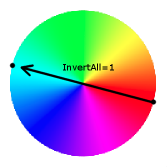

キャラクターやノーマルヘルパーにに残像を付けます。パラメータはすべて省略可能で、省略した場合、残像は青くなります。
AfterImage実行後、別のAfterImageを実行すると設定が上書きされ、直前まで表示していた残像は消去されます。
表示できる残像の数を増やしたい場合は、mugen.cfgのAfterImageMaxで設定が可能。初期値は8、最小値は0、最大値は100。
バージョンごとの変更点・バグ・エラー・仕様
| 内容 | |
|---|---|
| win版 version.1.0より前 | PalBrightの赤要素が機能しない。 |
| エラー | ILLEGAL TIME FOR AFTERIMAGE : TIMEに-2以下 |
| エラー | ILLEGAL FRAMEGAP FOR AFTERIMAGE : FrameGapに0以下 |
| エラー | ILLEGAL TIMEGAP FOR AFTERIMAGE : TimeGapに0以下 |
| エラー | ILLEGAL LENGTH FOR AFTERIMAGE : Lengthに0以下 |
パラメーター
- Time = 持続時間 (整数)
-
指定時間内は残像が付き続けます。ステートが変わっても有効で、持続時間中に攻撃を受けても、やられモーションに残像が付きます。AfterImageTimeで時間調整が可能。
-1で表示を永続化。0・1では表示されず、2以上か-1を指定しなければなりません。
※60フレーム=1秒
最小値: -1 , 最大値: 2147483627省略時のデフォルト値： 1 ;1フレームだけ表示
- Length = 残像用情報の保存枚数 (整数)
-
TimeGapで指定した数値の間隔でフレームを選ばれ、Lengthで指定した数だけそのフレームの時の残像情報(自キャラの画像と場所)が履歴に保存されます。
- Timegap = 残像画像の保存間隔 (整数)
-
Timegapで指定された数値の間隔でフレームが選ばれていきます。この時選ばれたフレームのキャラの画像と位置が履歴として保存されます。連続写真のような残像にしたい場合は、値を小さくしましょう。また、値が大きくなれば残像の間隔は長くなります。
- Framegap = 残像の表示間隔 (整数)
-
Lengthの時に保存された履歴から、FrameGapで指定された数値の間隔で履歴が選ばれ残像として表示されます。値を大きくすると、履歴が選ばれる間隔が大きくなるので、表示される残像の間隔も大きくなります。また、設定する値は必ずLengthより小さい値を設定しないと何も表示されません。
- PalColor = 彩度 (整数)
-
パレットの彩度を下げます。
0未満と257以上は256になります。
例: 彩度を低くした時、明るい色ほど白・暗い色ほど黒に近づきます。
0← →256最小値: 0 ;グレースケール , 最大値: 256 ;変化なし省略時のデフォルト値： 256 ;変化なし
- PalInvertall = 色反転フラグ (0か1)
-
色を反転するか・しないかのフラグです。
例: (0,0,0)→ (256,256,256), (0,252,0)→ (256,4,256), (256,0,0)→ (0,256,256)
最小値: 0 ;色が反転しない , 最大値: 1 ;色が反転する省略時のデフォルト値： 0 ;変化なし
- PalBright = 加算する赤, 加算する緑, 加算する青 (整数, 整数, 整数)
-
残像のパレットに指定の色要素を加算します。例えば、
PalBright=0,0,256とすれば、青っぽくなりますが、同時に白っぽくもなります。もともと白い部分は白いままです。最小値: 0, 0, 0 , 最大値: 256, 256, 256省略時のデフォルト値： 30, 30, 30 ;少し白っぽくなる。
- PalContrast = 乗算する赤, 乗算する緑, 乗算する青 (整数, 整数, 整数)
-
残像のパレットに指定の色要素を乗算します。例えば、128,128,256とすれば、青っぽくなりますが、同時に黒っぽくもなります。もともと黒い部分は黒いまま。また、省略した場合、青っぽい状態で表示されます。
省略時のデフォルト値： 120, 120, 220 ;青黒っぽく
- PalPostBright = add2_赤, add2_緑, add2_青 (整数, 整数, 整数)
-
2つ目以降の残像について、指定の色要素を加算します。
最小値: -256, -256, -256 , 最大値: 256, 256, 256省略時のデフォルト値： 0, 0, 0
- PalAdd = 加算する赤色, 加算する緑色, 加算する青色 (整数, 整数, 整数)
-
指定した色を1,2,3,…,N番目の残像に累積して色要素が加算されます。
暗い色ほど指定色に近づき、色の合計値が大きくなるほど、色が明るくなります。
例:
Add=256,0,0の場合、 黒(0,0,0)は 赤(256,0,0)になりますが、 白(256,256,256)は 白(256,256,256)のままです。最小値: -256, -256, -256 ;黒 , 最大値: 256, 256, 256 ;白省略時のデフォルト値： 10, 10, 25
- PalMul = 合成する赤色, 合成する緑色, 合成する青色 (整数, 整数, 整数)
-
1,2,3,…,N番目の残像の基本色(パレット+Add+SinAddの合計値)に合成色(Mulで指定した値)/256の累積した色要素を乗算します。
合成色の値が小さくなるほど、色が暗くなります。明るい色ほど合成色に近づきます。
例:
Add=64,256,64,Mul=1,256,1の場合、 白(256,256,256)は 緑(1,256,1)になりますが、 黒(0,0,0)は 黒(0,0,0)のままです。最小値: 1, 1, 1 , 最大値: 256, 256, 256 ;変化なし省略時のデフォルト値： .65, .65, .75
- Trans = 透過の種類 (文字列)
-
残像の透過の種類を指定。存在しない透過の種類を指定した場合、残像は表示されません。(ただし、AfterImageは実行されているためAfterImageTimeは実行可能)
透過の種類 効果 Default 何も処理しない。多分Noneと同じ処理？パラメータは読み込まれる。 None 透過処理無し。Airで透過処理している時無効にできる。 Add 画像を半透明にする。アルファ値256,256の加算透過。 Add1 Addより暗い感じの半透明にする。アルファ値256,128の加算透過。 Sub >画像を影のように半透明にする。減算透過。 AddAlpha Alphaとセットで使用します。 省略時のデフォルト値： None
- Alpha = ソースアルファ, デスティネーションアルファ (整数, 整数)
-
透過型が"AddAlpha"の場合に指定します。有効範囲は0(低)から256(高)です。省略時256, 0。
ソースアルファは、透過させるスプライトの透過度、デスティネーションアルファは、スプライト透過の目的となるピクセル(背景と考えると、実際には異なるが、わかり易い)の透過度、ということになります。省略時のデフォルト値： 256, 0
- Persistent = HitPause無視時間 (整数)
-
Persistentの値をNに設定した場合、設定したステートコントローラーはNフレーム後にもう一度実行されます。0の場合、トリガーが成立しても1回しかステートコントローラーが実行されません。※トリガーは読み込みますが、パラメーターは完全に無視されます。Persistentが管理されている配列が初期化される条件は、ステート処理開始(ChangeState,SelfState,TagOut,TagInなどでステート移動)でTime=0の場合に実行されます。また、初期化される個数が決まっており、10個のPersistentしか初期化されません。ですので、Persistentの多様やChangeStateでの使用は避けましょう。もし、特定のステートが実行されない場合は、この仕様を疑ったほうがいいかもしれません。その他にも、
var,fvar,sysvar変数は利用できない・常時ステート([StateDef -1],[StateDef -2],[StateDef -3])では、常にPersistent=1の状態・IgnoreHitPause=1が設定されていた場合、アドレスを書き換え(Alive偽装・Persistent偽装？など)・バージョンによる動作の違いなどバグが満載です。結論、
Persistentの値が0以外の場合は省略して、TriggerでTimeやvarを使って管理した方がいいです。最小値: 0 , 最大値: 128省略時のデフォルト値： 1
- IgnoreHitPause = HitPauseを無視フラグ (0か1)
-
IgnoreHitPauseの記述されたステートコントローラー処理がHitPause(ヒット停止時間)を無視して実行されます。基本的に1に設定しておくべきパラメーター。パラメーター自身に
var,fvar,sysvar変数は利用できません。攻撃を当てたり受けたりした時に
VarSetしたり、Explodの演出をずれないようにしたり用途はさまざま。最小値: 0 , 最大値: 1省略時のデフォルト値： 0
省略した時のデフォルト値
- [State ,AfterImage]
- Type = AfterImage
- Trigger1 = 1
- Time = 1 ;1フレームだけ表示
- Length = 20 ;20個の履歴を保存
- Timegap = 1 ;1フレーム毎に残像を保存
- Framegap = 4 ;4番目に保存された残像
- PalColor = 256 ;変化なし
- PalInvertall = 0 ;変化なし
- PalBright = 30, 30, 30 ;少し白っぽくなる。
- PalContrast = 120, 120, 220 ;青黒っぽく
- PalPostBright = 0, 0, 0
- PalAdd = 10, 10, 25
- PalMul = .65, .65, .75
- Trans = None
- Alpha = 256, 0
- Persistent = 1
- IgnoreHitPause = 0
パラメーターの読み込み順
Time(1) => Length(2) => Timegap(3) => Framegap(4) => PalColor(5) => PalInvertall(6) => PalBright(?, 7, 8) => PalContrast(9, 10, 11) => PalPostBright(12, 13, 14) => PalAdd(15, 16, 17) => PalMul(18, 19, 20) => Trans(?) => Alpha(21, 22) => Persistent(?) => IgnoreHitPause(?) =>
*バージョンや実行環境,パラーメーターの指定の仕方によって、読み込まれる順番が変わる可能性があります。参考程度なものだと思ってください。
注意事項
| 問 | 他のキャラクターの残像が表示されない。 |
|---|---|
| 原 | 表示できる残像の数は、全プレイヤーで共有しているので表示しすぎると他のプレイヤーが表示できなくなります。 |
| 答 | mugen.cfgのAfterImageMaxの数値を増やす、もしくは原因のあるキャラのAfterImageを変更する。 |
| 問 | キャラクター自身の残像が表示されない。 |
|---|---|
| 原 | AfterImageが常時監視（Trigger1=1）になっている。 |
| 答 | Trigger1=GameTime%2にするなどAfterImageが常に実行されていない状態にする。 |
| 参 |
常時監視でAfterImage
毎フレーム実行したafterimageが無効化される理由 |
| 問 | キャラクター自身の残像が表示されない。 |
|---|---|
| 原 | AfterImageのパラメータが正しい型で書かれていない。 |
| 答 | AfterImageのTransの値が""で囲まれている。など |
| 参 | エラー |
| 問 | 処理が重い。 |
|---|---|
| 原 | 残像の表示数が多い。または、Length,FrameGapの値が原因。 |
| 答 | Lengthの値を小さくする。FrameGapの値を大きくする。Trans=Noneにする。 |
| 参 | AfterImage |
| 問 | ちょいメモ |
|---|---|
| 答 |
|
| 問 | AfterImageがすぐに切り替わらない・消去したい。 |
|---|---|
| 原 | AfterImageでTimeやLengthで指定した時間だけ残像が残ってしまう。また、AfterImageTimeでTime=0を設定してもLengthが残ってしまう。 |
| 答 | 再度AfterImageで1フレームだけTime=0実行すると、完全に消去される。 |
| 参 |
afterimageの消去について
afterimageの試合中切り替え AfterImageTime |
コードサンプル
基本的な使い方
- [State 100]
- Type = Afterimage
- Trigger1 = Time = 0
- Trans = Add
- TimeGap = 2
- FrameGap = 3
- Time = 20
- PalBright = 0, 0, 0
- PalContrast = 70, 70, 70
- PalAdd = 0, 0, 160
- PalMul = 1, 1, 1
Trans = None
Trans = Add
Trans = Add1
Trans = Sub
喰らい状態の時に残像を消す。
- [State -2, 喰らい状態で残像を消去]
- Type = AfterImage
- Trigger1 = MoveType = H
- Time = 0
常時AfterImageとInvisibleで、本体が透けてるように見える。
- [State -2]
- Type = AfterImage
- Trigger1 = 1
- Time = 2
- Trans = Add
- FrameGap = 1
- [State -2]
- Type = AssertSpecial
- Trigger1 = 1
- Flag = Invisible
本体よりでかい残像はヘルパーとかExplod
- [State -2]
- Type = Explod
- Trigger1 = (Root,Vel x != 0 || Root,Vel y != 0) && (Time%8=0)
- Facing = Root,Facing
- PosType = P1
- Pos = 0, 0
- Scale = 1.1, 1.1
- SprPriority = -5
- RemoveTime = 15
- RemoveOnGetHit = 1
- Trans = AddAlpha
- Alpha = 256,200
- Anim = 0 + var(0);残像によってキャラのアニメーションを切り替えるためのvar
- IgnoreHitPause = 1